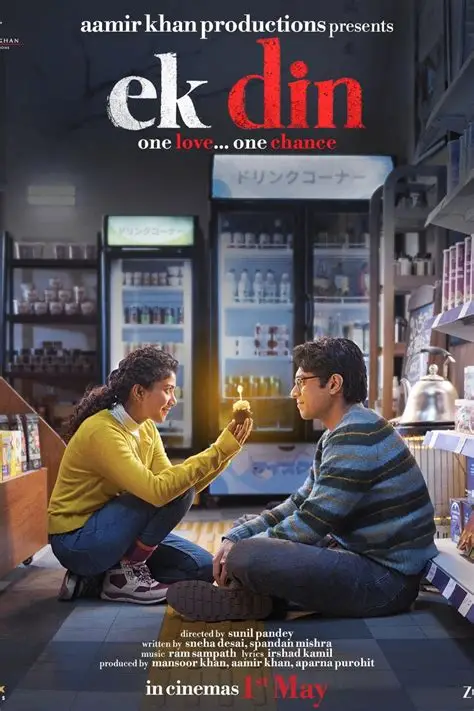

EKDIN
12 Aug 2026
Ek Din
A modern romance mixed with Japanese culture, following an ordinary IT guy who becomes involved in a deeply personal mystery. A modern romance with Japanese culture, an ordinary IT guy, and a story about remembering what matters. Dinesh loves his colleague Meera, but can't confess his feelings. During a company trip, Dinesh makes a wish under a magical bell for Meera to become his girlfriend for a day and his wish comes true.
My note
“Japanese culture mixed with modern love, served with an IT guy. The ending hit differently.”
“Japanese culture mixed with modern love, served with an IT guy. The ending hit differently.”